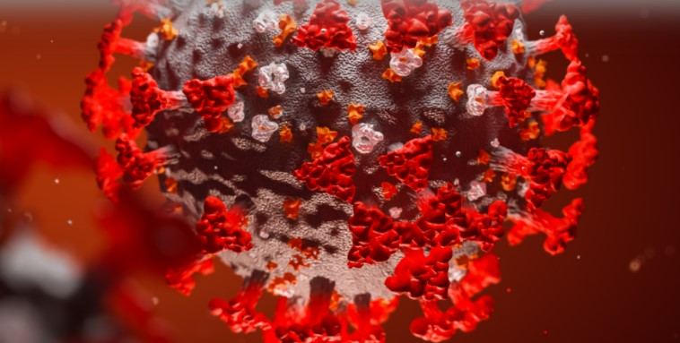

COVID-19 RESPONSE
CAF AMERICA ENABLES TAX-EFFECTIVE RESPONSE TO THE CORONAVIRUS PANDEMIC
The World Health Organization has declared the novel coronavirus (SARS-Co-V-2) a global pandemic. The number of those showing symptoms of COVID-19 increases daily around the world with the virus affecting hundreds of thousands. Via CAF America, donors can make tax-receipted fully regulatory compliant contributions to support the work of hospitals, community-based organizations, and other charities that are mobilizing around the world to provide support to those affected by COVID-19.
GAVI, the Vaccine Alliance Friends Fund:
A major distributor of COVID-19 vaccines internationally, GAVI’s COVAX program aims to provide 1.8 billion COVID-19 vaccine doses to the 92 of the world’s lowest-income countries in 2021 and early 2022. The only program of its kind, COVAX allocates vaccines at a global level according to WHO guidance on most vulnerable populations (i.e. healthcare workers, then elderly populations, etc) as part of a worldwide effort to halt the spread of the pandemic.
Médecins Sans Frontières:
Providing testing, treatment, and isolation conditions to marginalized and vulnerable parts of the population. Responding in France, Italy, Belgium, Iran, Afghanistan, and Greece.
Save the Children - Organisation für die Rechte der Kinder Suisse:
Supporting handwashing (distributing soap, hand sanitisers and other critical hygiene supplies), healthcare and mental health services (pre-positioning extra essential supplies), education (preparing tools for caregivers and child friendly spaces), identification and monitoring of vulnerable households and working to provide extra support, and preparing refugee camps by distributing hygiene kits and informing communities and health workers.